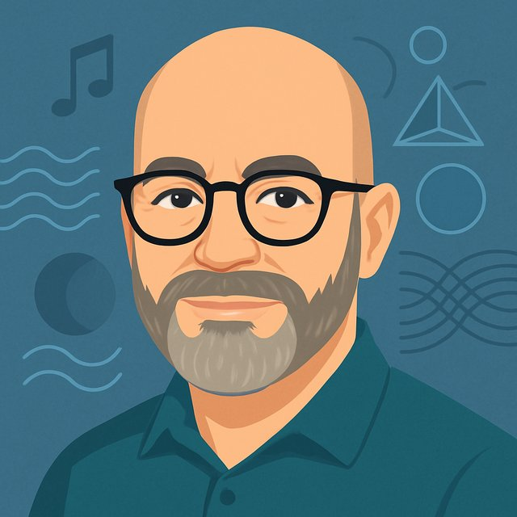

Hi, I am
Zoltán
Zoltán
Temesvári
Jack of many trades, master of (probably) none.

The trades01 — 04
-
01
Computer Technologist
In preparation -
02
Classical Musician
In preparation -
03
Potter
In preparation -
04
(Closet) Philosopher
In preparation
WritingLatest
Essay · In Hungarian ·
A függőség paradoxona
Avagy miért stabilizálhatja a gazdasági hanyatlás az Orbán-rendszert?
Read the essay